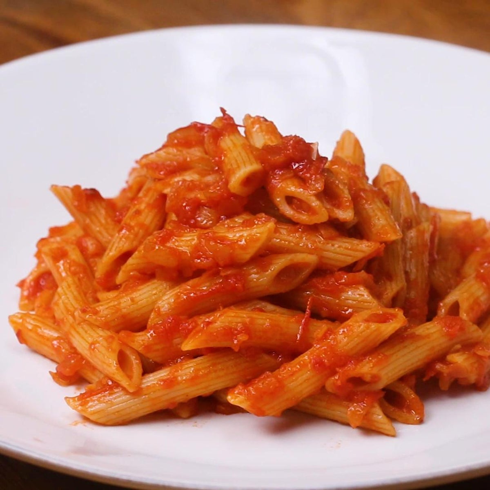

Pasta

Description
Red sauce pasta is a perfectly cooked pasta in a richly flavoured tomato sauce. We have converted this pasta
this recipe to suit our palette. An assortment of indregients ranging from onions and garlic
to peppercorns, herbs and bay leaves offer their unique flavour to this flavour-intense dish.
Making this pasta is an experience you would not want to forget. Though the procedure is tedious,
the outcome is worth the wait!!
Ingredients
- Cooked Pasta
- Bayleaves and peppercorns
- Finely Chopped Parsley and Basil
- Olive Oil
- Chopped Onions and Garlic
- Crushed Tomato
- Herbs
- Salt and Pepper
- Fresh Cheese
Steps
- Heat Olive oil in a pan, add Bayleaves and Peppercorns and sautee for 30 seconds
- Add the chopped onions and garlic. Cook for 2 minutes.
- Add the crushed tomato puree and salt to taste. Stir and cook well for 5 minutes.
- Remove Bayleaves and discard them.
- Once the tomatoes are cooked, Add the boiled Pasta.
- Mix thoroughly and adjust for salt and pepper levels
- Lastly, Add fresh chesse and Serve
HomePage
Other Recipies